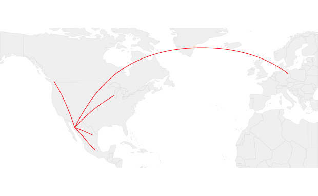
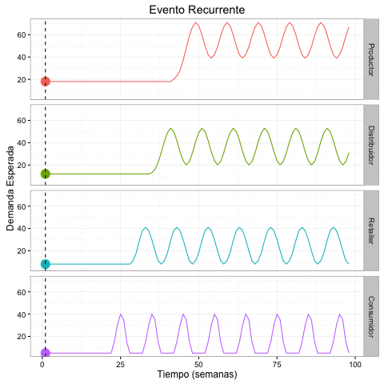
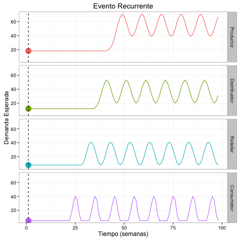

Agenda
- Bio
- Inventario Fantasma:
- Un tipo de Out-Of-Stock (OOS)
- Desde el punto de vista del Productor
- Desde el punto de vista del Retailer
- Analytics!
- Q&A
Bio
"Street Cred"
- Ing. Mecánico Administrador - Tec de Monterrey
- M. Manufactura, Supply Chain y Operaciones - McGill University
- Más de 9 años de experiencia en Supply Chain y Analytics en:
- Retail y CPGs
- Distribución de Electrónicos
- Industria Aeroespacial
- Industria Automotriz
- Manufactura
- Sonorense (hasta a -30ºC)
Inventario Fantasma
Un tipo de Out of Stock (OOS)
Out-Of-Stocks (OOS)
Definición
- OOS ocurre cuando no hay "físicamente" un item en el estante para su venta.
- OOS inicia cuando el último item de un SKU es removido del estante.
-
OOS termina con el resuministro del mismo SKU en el estante.
-
Podemos definir los siguientes tipos de OOS:
- DC: No Existe inventario
- Store: No Existe inventario en la tienda
- Shelf: Existe inventario en la tienda pero no se encuentra en el estante
OOS
Desde el punto de vista del consumidor
Reacción del consumidor ante OOS
| Acción | Porcentage | Tienda | Proveedor |
|---|---|---|---|
| Compra item en otra tienda | 31 % | X | |
| No compra item | 9 % | X | X |
| Pospone compra | 15 % | X | X |
| Sustituye otra marca | 26 % | X | |
| Sustituye misma marca | 19 % |
Credito: Gruen, Corsten, and Bharadwaj 2002
Shelf - OOS
¿Por que no está mi producto en el estante?
- No hay producto
- Operación de la Tienda:
- Está en un lugar incorrecto
- Todavía está en el bodega (backroom)
- Está en "transito"
- Nivel de inventario Incorrecto en el sistema:
- Inventario Escondido
- Inventario Fantasma
- Robado, Dañado o Extraviado
Inventario Fantasma
El círculo vicioso...
Inventario Fantasma
Desde el punto de vista del productor
Inventario Fantasma
Un caso inventado...
Cerveza Artesanal "CHHHeve"
Producida en Hermosillo, Sonora para el mundo
| item | Origen | Destino | Distancia (Km) |
|---|---|---|---|
| Malta | Vancouver | Hermosillo | 2,578.8 |
| Cebada | Milwaukee | Hermosillo | 2,472.8 |
| Lúpulo | Alemania | Hermosillo | 9,474.2 |
| Envases | Monterrey | Hermosillo | 1,118.2 |
| Cerveza | Hermosillo | León | 1,288.2 |
| Cerveza | León | Cd. México | 324.6 |
| Cerveza | Cd. México | WTC | 1.3 |
| TOTAL | 17,258.4 |
Más de 17,258,000 mts supervisando el suministro, producción y distribución de "CHHHeve" para que al final fallen los últimos 50 mts!!!
De la tierra a la tienda...
¿Qué pasta antes de que puedas comprar algo?
Producción
- Materia Prima
- Mano Obra
- Mantenimiento
- Reparación
- Operaciones
- Calidad
- Control Inventario
info
producto
Distribución
- Logística
- Transportación
- Almacenamiento
- Control Inventario
- Mano de Obra
- Cross-docking
- Mantenimiento
info
producto
Punto de Venta
- Mano Obra
- Bodega
- Control Inventario
- Operacion Tienda
- Logistica
info
producto
Consumidor
- Consumo Producto
- Control Inventario
- Presupuesto
Forecasting
Anticipando "lo que viene"
 

Inventario Fantasma
Desde el punto de vista del Retailer
De la tienda a las casas...
¿Los problemas del productor a la n potencia?
Inventario Fantasma
Analytics
#datavis
Inventario Fantasma
Un nuevo-viejo "approach"
Cuando el uso de "visuales" no es práctico, se puede hacer uso de analyticos avanzados (y no tan avanzados):
- Clasificar items (i.e. categoría, tipo de producto, temporada)
- Definir "gap" máximo entre actividad de POS (meses, semanas, dias, horas)
- Calcular "Ventas Perdidas" que representa cada combinación item/tienda
- Seleccionar Top 5, 10, 20 combinaciones
- Validar resultados item/tienda identificados
- Ajustar criterio a validación
- Repetir ciclo hasta obtener % predicción aceptable
Retail Analytics
Otras aplicaciones
Solo en el área de "replenishment":
- Utilizar precios promedio para identificar eventos o liquidaciones
- Optimización de niveles de inventarios
- Afinación de Forecast
- Identificar tendencias por tienda/región/categoría y customatizar soluciones
- Combinación con información socio-económica
- Combinación con información meteorológica
- Entre otras...
Inventario Fantasma
Q&A
Gracias!
Arturo Cardenas Martinez